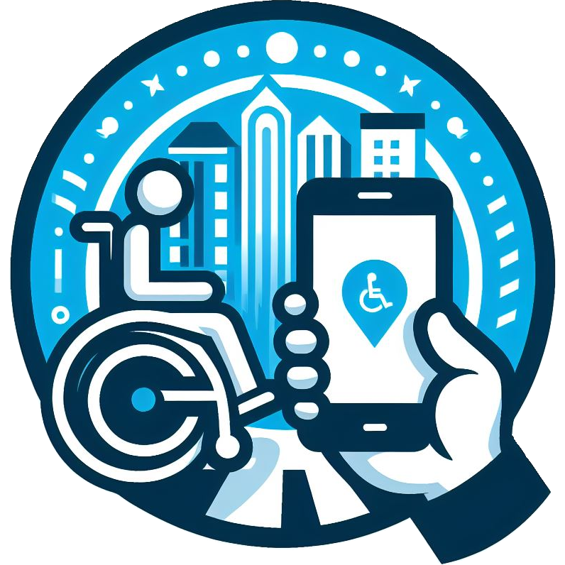

<mat-sidenav-container class="sidenav-container">
  <mat-sidenav #drawer class="sidenav" fixedInViewport [attr.role]="(isHandset$ | async) ? 'dialog' : 'navigation'"
    [mode]="(isHandset$ | async) ? 'over' : 'side'" [opened]="(isHandset$ | async) === false">
    <mat-toolbar class="toolbar sidenav-toolbar">
      
      <h1 class="app-title">WheelJourney</h1>
    </mat-toolbar>
    <mat-nav-list>
      <p class="navigation-label">Nawigacja</p>
      <a mat-list-item [routerLink]="['/map']" routerLinkActive="router-link-active" [routerLinkActiveOptions]="{exact:
      true}">
        <mat-icon class="material-icons-outlined" aria-hidden="false" fontIcon="map"></mat-icon>
        Mapa</a>
      <a mat-list-item [routerLink]="['/dangerous-places']" routerLinkActive="router-link-active"
        [routerLinkActiveOptions]="{exact:
      true}">
        <mat-icon class="material-icons-outlined" aria-hidden="false" fontIcon="dangerous"></mat-icon>
        Niebezpieczne miejsca</a>
      <a mat-list-item [routerLink]="['/about']" routerLinkActive="router-link-active" [routerLinkActiveOptions]="{exact:
      true}">
        <mat-icon class="material-icons-outlined" aria-hidden="false" fontIcon="info"></mat-icon>
        Infomacje</a>
    </mat-nav-list>
  </mat-sidenav>
  <mat-sidenav-content class="content-sidenav">
    <mat-toolbar class="toolbar">
      @if (isHandset$ | async) {
      <button type="button" aria-label="Toggle sidenav" mat-icon-button (click)="drawer.toggle()">
        <mat-icon class="material-icons-outlined" aria-label="Side nav toggle icon" fontIcon="menu"></mat-icon>
      </button>
      }
      {{title()}}
    </mat-toolbar>
    <main class="main">
      <router-outlet></router-outlet>
    </main>
  </mat-sidenav-content>
</mat-sidenav-container>